5th全握！チャリティーライブ！
ありがとうございました(^^)
振り返りながら報告しますー
5thミニライブ
君の名は希望
13日の金曜日
抽選会
VTR
ロマンティックいかやき
シャキイズム
13日の金曜日ほんとに好き＼(^^)／
ダンスも衣装も可愛い感じでねーほんとに
披露できてよかったでっすっ
VTRてのは
君の名は希望・シャキイズムのメイキング、
16人のプリンシバル deux のお知らせです
詳しくは公式サイトにも載ってるので
ぜひチェックしてみてくださーいー .
握手会
まいやんお姉たまとぺあでしたー///
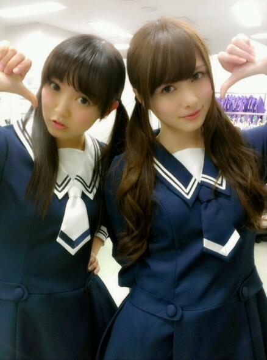
まいやんありがとーう(´pωq｀)
シャキイズムの時のまいやん、
通称まいおの決めポーズっ♪
まいやんファンのみなさん
優しくしてくださって
本当にありがとうございました！
さいしょっから最後まで
ずーと楽しかった！ほんまに！
ひめきゅんさんもありがとうございましたー
みんなの顔みると落ち着いたよー＊
長い間並んでくれて お疲れさまでしたっ♪
いろいろお話したけど、そうだなー
まだツイン全然いけるよーって
たくさんの方に言ってもらえたので
高２になってもツイン貫きまーす(〃ω〃)
お楽しみにね。ふへへっ
そしてチャリティーライブ
失いたくないから
心の薬
君の名は希望
走れ！bicycle
制服のマネキン
おいでシャンプー
震災復興のことを考えるきっかけになれたら
嬉しいです
メッセージはしっかり伝わったかな...
義援金もご協力ありがとうございました
これからも自分たちにできることは何か
常に考えながら生活していこうと思います
一年後の私たちはさらに成長して
もっと強いパワーを
届けられていたらいいな。
そしてペットボトルのキャップ回収も
ご協力ありがとうございました！
オリジナル缶バッチには
メッセージが書かれてるんだけれども
ひめたんは「っ」を書いた(ω)
ファンのみなさんと一日中一緒にいれて
素敵な１日でした♪
みなさんありがとうございました！
明日は撮影！がんばりまーす＼(^^)／
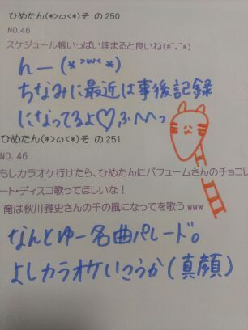
(＊´・ω・＊)
昨日今日はレッスンしてきたよー！
明日は全握だよー！
5thライブだよ。握手会だよ。
そしてチャリティーライブだよ。
握手は第1レーンでまいやんと一緒です∩^ω^∩
まいやんお姉たまーよろしくねー＊
まいやんファンのみなさま初めましてですっ
ひめきゅんさんはお久しぶりですっ
または3日ぶりかな？
よろしくねー＊
そして
ペットボトルのキャップ5っ以上持ってって
ぜひオリジナル缶バッチ ゲットしてねー
最近 風やばいね(´・ω・｀)
昨日ひめたんは万理華と駅まで
相合い傘して帰りまーしーたんだけれども
傘が見事にひっくり返って
恥ずかしいことになりましたーふへへ///
想像してみよう///
あとWひなも相合い傘しとったー♪
写めは ちょっと懐かしい年末ライブ！
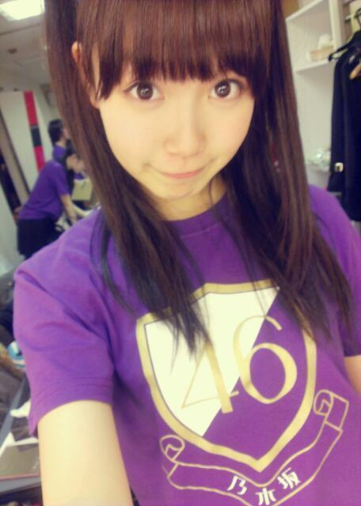
ほんとに直後に撮ったものです
おめめがきらきらしています
天然チークが素敵です
ちょっとメイクが崩れてるけど
まあ、ライブのお約束ってやつだね(ω)
 音楽聴く時のお気に入りのセトリってある？
音楽聴く時のお気に入りのセトリってある？セトリってか順番は気にしてないけど
キセキ/北乃きい
kiss me 愛してる/℃-ute
変わらないもの/奥華子
とか好き(^^)ジャンルばらばら(^^)でも気にしない(^^)
辛いときとかにおすすめの歌とかある？涙空/GReeeeN
とかは辛いときに聴くと
歌詞がじーんって響くものがあるってのは
数年前に経験したことあるかなー
普段は(あーいい歌だなー)しか思わないけど
じっくり聴くとうわあぁああああってなる。かな
ひめたんはロックダンスって知ってますか？ロックな感じのダンス？え？違うの(´・ω・｀)？
 ひめたんの好きな顔文字おしえて〜〜?
ひめたんの好きな顔文字おしえて〜〜?(＊´・ω・＊)このこ！
みゅみゅに
「ひめたん こんな顔してる」て言われてから
愛着がありますこのこには。
まなみのりさって わかるよね？
ひめたんも バラ祭りとかに きたことあるのかなぁ（＾ω＾）？もちろんっ！アクターの先輩だよー＊
バラ祭りのステージ行ったことあるよー
行き帰りのバス旅も楽しかった気がする(^^)
ひめたんは, タッチのアニメとか単行本を
見たり読んだことはありますか？あ、みたことないです...
でも歌は好きだったの(〃ω〃)
だから嬉しいですー♪
 あげもりって言う名前でコメしてるけど
あげもりって言う名前でコメしてるけど
その意味知りたい？☆おんっ！教えてー♪
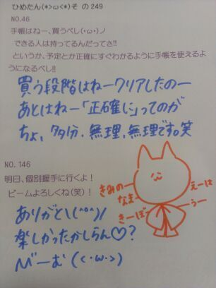
(＊´・ω・＊)
5th個別握手会スタート！
来てくださったみなさん
ほんとにありがとうございましたー∩^ω^∩ .
なんかテンション高いねーって
みんなから言われたけど
なんかねー久々で嬉しかったのー
あんのー成績がよかったとか
そーゆーことではね。ないんだよ。ふへへ
でも進級できるってー
おめでとうひめたん(ω)
春から高2！
そんで今日は久々にみんなそろったから
いくちゃんもるんるんも
ブログ見てくれてたらしくって
「春休みなったら遊ぼー＼(^^)／」
ってなりました＊
日程は後日決めることにしまーすー
そんで握手が久々だったから
いろいろ話した気がするっ
バースデーライブ、5thのPVの感想、
乃木どこの感想、あとは通知表ですかー
初めましての方も
たくさん来てくださって
ほんとに嬉しかったですーありがとう！
ひめたんがいっつも
質問返しの紙に描くねこさんは
「にゃんこさま」って名前になりましたー拍手っ
13日の金曜日の衣装を着たのー( ^ω^ )
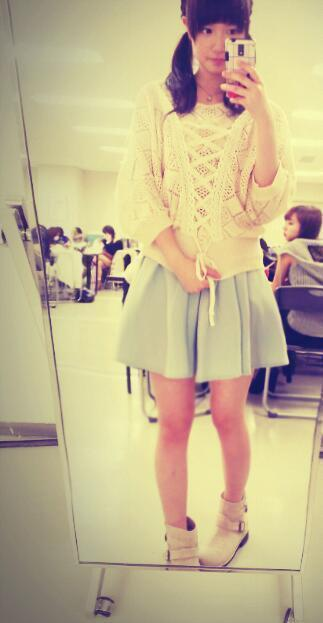
これは全身Auntie Rosa !!
これまた初めて行ったお店ですん(｀・ω・´)
新境地を開拓した。この系統も好きだ。
あのねー服もなんだけど
ネックレスがなかなか可愛いのー♪
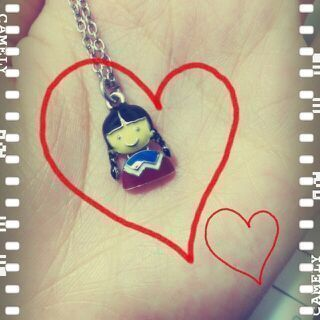
あっネックレスはどこのか
よーわかりませーんごめんねー
アクセサリーがいっぱい入った棚を開けたら
この子と目があったけこれにしたんだけど
PVの時はちょっと違うんだけどねー
こーんな感じの握手会でした。
20日の全握も待ってます＼(^^)／おやすみー
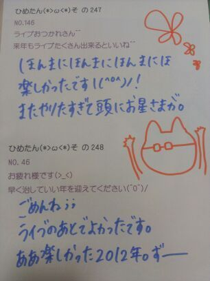
(＊´・ω・＊)
いよいよ今日から
5thの握手会が始まるね(｀・ω・´)
ひめたんは
午前中は学校で通知表もらってくるから
そんで午後から幕張行くから
あのー
テンション低かったらそーっとしといてね。笑
笑。とか言いながら結構切実に。ふへへ←
あっでもスルーも悲しいからやめてねーっ
20(祝)の千葉全握はまいやんとぺあ！
まいやんとの全握ぺあ初めてー///
嬉しいー照れちゃうー(〃ω〃)
まいやんふぁんのみなさんはじめまして＊
よろしくお願いします！
ひめきゅんさんもよろしくねー♪
そんなわけで昨日は
美容院行ってきましたー∩^ω^∩
ヘアアレしてもらたーよー！
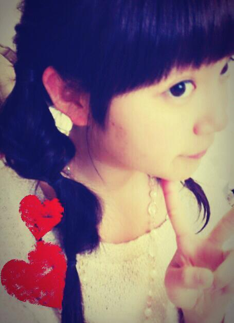
あのねー
このあと1時間ちょいウォーキングしたから
ちょっと汚くなっちゃったんだけど
編み込みってか みつあみってか
とにかく可愛いの！すーごいの！
なんかメルヘンなのー(´。・ω・。｀)
今日の質問返しはおとこのこもだけど
おにゃーのこは好きかもー♪

 お出かけは、誰と行くことが多いですか？
お出かけは、誰と行くことが多いですか？
? 家族?友だち?メンバー?一人うーん際どい。
ちょっと寂しいこと言うと、
あんまおでかけしないの。インドアなの。ふへへ
しいていうなら家族が多いかなー(´・ω・ `)
洗顔とかなに使ってるの？プロアクティブ歴が長かったよー( ^ω^ )
ひめたーんは何の香水使ってるの？香水...ではないんだけど香りものといえば
ボディーファンタジーの
ボディースプレーシュガーバニラ使ってる＊
そろそろ香水デビューしたいなーんー
何かおすすめあったら教えておにゃのこ！
ひめたんはどうしてそんなに可愛いんですか？
美容法など教えて下さいいえいえそんなことーと謙遜しつつ。
あっ最近"謙遜"が読めるようになったのーふへへ
あー美容法かーいろいろあるけど
やっぱり憧れの人を見つけて理想像があると
いーんでねーのー？と思う(ω)
ひめたんは宮崎あおいさんが大好きですねー
で何をしてるのか...とそゆ質問だよね？
うーん企業秘密＊？うへへ。笑
若月blogでひめたんが 一週間で痩せると言って本当に
4キロ痩せたとあったけど どんなことしたか教えて下さい(>_<)
若月ブログに、ひめたんが1週間で4kg痩せたって書いてあったんだけど、どーやって痩せたの?(>_<)そう。これねーブログでは
ひっとっこっとっもっ言わなかったけど。笑
ひそかにダイエットしてました
あんのー年末年始にかけてかなー
まあ簡単で単純な "食べずに動く" ってやつだけど
オススメはしないです辛いから。
"バランスのいいごはん+ウォーキング" スタイルで
今は頑張ってるので、
成果が出るのに時間がかかるけど
待っててくださいみなさーん＼(^^)／
昆布だしとかつおだしどっちが好き？←違いがよーわからーん！笑
あのね、美味しかったらそれでいーの！
三分かからないくらいの簡単なおすすめ料理ってありますか？＊たまごごはん・のりたま
＊ばなな・ヨーグルト→ミキサー
のりたまは最強ー♪
ひめたんはすぅちゃんと
洋服の貸し借りはするんですか。するよー好きな系統は全然違うけどねー
うーん言葉で表現するなら
姉さんは ふわふわ系、ひめたんは ふりふり系、
すうは ばしばし系が好きです。
すうはぴんくが似合わないらしいけど
ひめたんはぴんくが大好きです。その逆が水色。
ひめたんは最近、
すうちゃんと会ったのはいつですか？⊂((・x・))⊃えっとーえとえと
一緒に住んでます。笑
虹の色ををひめたんが決めていいことになりました。
ひめたんが作る虹の色はどんな色ですか？ピンクのグラデーションの虹とかね！
そんでもってキラキラとかいれちゃったりねー♪
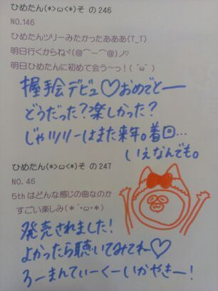
(＊´・ω・＊)
now on "sale" ね...
もういろいろごめんなさい←
あのねー誤字はほんまにわざとじゃないの。
べっ別にみんなにかまってほしくて
わざと間違えるとか
そーゆー魂胆なんてないんだからねっ
ちょっとおっちょこちょいなんだー
てへぺろーとかそーゆーことじゃないんですっ
ひめたんのブログは間違い探しだよーとか
そーゆーアレでもないんですっ
あたしの注意が足りんのです(´・ω・｀)
でもいっつも寝ぼけてるわけじゃ
ないんだけどなーなんでかなー...
...
これからも教えてね。
かまっちょかまっちょ。ふへへ。///
さて、えーとーなんだっけ。あーそうそう
5th single「君の名は希望」デイリー1位 ＊
ありがとうございます(´;ω;`)
いやー嬉しいなーもうっほんとにっ
マネキンの時よりもさらに
たくさんの方が手にとっていただけたかなーと
思ったら嬉しい限りです！
着うたもダウンロードしてみたかな...♪
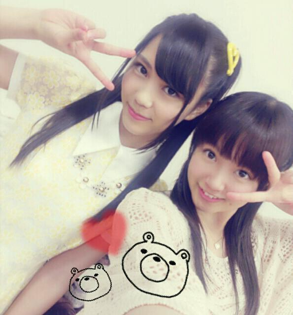

 ひめたんが二期生に絶対守ってほしい乃木坂内のルールとか有る？
ひめたんが二期生に絶対守ってほしい乃木坂内のルールとか有る？みんな仲良くすること∩^ω^∩！
もうじき乃木坂には2期生が加入するでしょ。そのタイミングで偽メンバーが混ざってたらひめたんは見抜けるかな？(どっきり企画的なやつ)そんなひねくれた企画するんなら
罰として加入してもらおうか。にっこり。
ひめたんは普段よく飲む飲み物ってある？最近はお野菜とかバナナとかを
ミキサーでぐるぐるやっておりますねー
いちごみるく いちごオレ よく飲んでるよー♪
MJ で Perfume に会ったとき
ごあいさつの他にどんなお話したのかな？あまり時間がなかったからアレだけど
頑張ってねー応援するよーみたいな感じで
言っていただきました(〃ω〃)
今、普通のメロンパンとチョコチップメロンパンのどちらを買おうか迷ってます。
ひめたんに選んでもらいたいんで、ドッチが良いかな？チョコチップメロンパン！
でもねー実はひめたん
メロンパン好きじゃないんよねーごめんね。ぺろ
何でも一つだけ願いが叶うとしたら、何を願うの？おやゆび姫になりたい。
こんな寒いときだから？ 海外行くならどこ行きたいですか〜？ロシアいきたいでーすー冗談でーすっ
飛行機怖いんよね(´・ω・｀)
今朝みたけどミャンマーブームきてるらしいよー
あっすっすー
あ、気温のことはよーわかりませんぬ←
ひめたんは 何か資格とか持ってる？(^O^)漢検持ってるけど何級か忘れたよー
びーむ師の資格(^O^)
ひめたんは、お部屋の中では何してる？それはひっみっつー
とかゆって秘密にすることもないけどー
そーだなー知りたいかい？
まあーDVD観て過ごすのが好きかなー
ひめたんのお部屋ってどんな感じですか？王子さまが迎えに来てくれそうなお部屋
とだけ言っておくから想像してごらん♪笑
あっジャッキーちゃんのぬいぐるみが
いーぱいおるよーん(*^ω^*)
そして今日 3月14日といえば
そうですねホワイトデーですねー
お返し待ってるよーっていやそーじゃなくて
ひめたんが都民になって丸1年*\(^^)/*
これからも初心を忘れず頑張ろうと思いますっ
後輩たちも卒業、受験を終えてね
新たなスタートを切ったのかなーなんてね。
なんかあったらひめ先輩に連絡しなさいねー＊
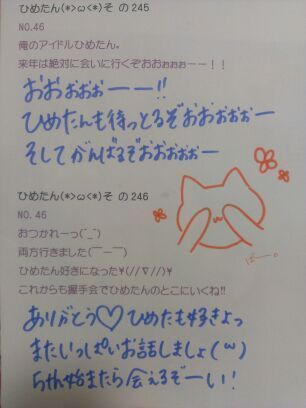
(＊´・ω・＊)